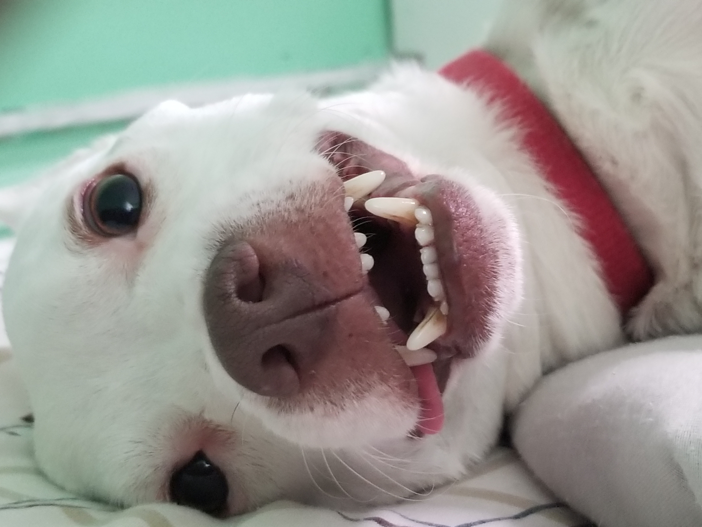
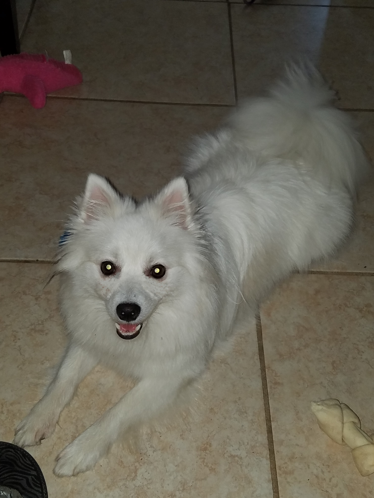

This is the Great Protector

I watched this dog for like 6 weeks before adopting him. I wanted to name him
Winter, but I never could make the change from his original, Cecil. He had a bad
attitude and I was scared to have such a fearsome dog as my first pet. He
however, has been one of the greatest dogs I've known. He is 6 years old.
This is the Great Comforter

The Great Protector found Albert. He is such a snuggler, however, he wasn't always, so.
He used to scratch and swipe at me all the time. When I moved he thought he was going to be
left behind and showed signs of severe depression. He was the last to be moved to the new
location, however, when he realised he wasn't being left behind, he became the best kitty ever!
This is the Great Jokester

This babe is the best baby. She never gets upset, even when she's in trouble for stuff.
She keeps me entertained and I can't stay sad or upset about anything when she's around.To bring about
all these year's of happiness for <$1000, she was well worth it.